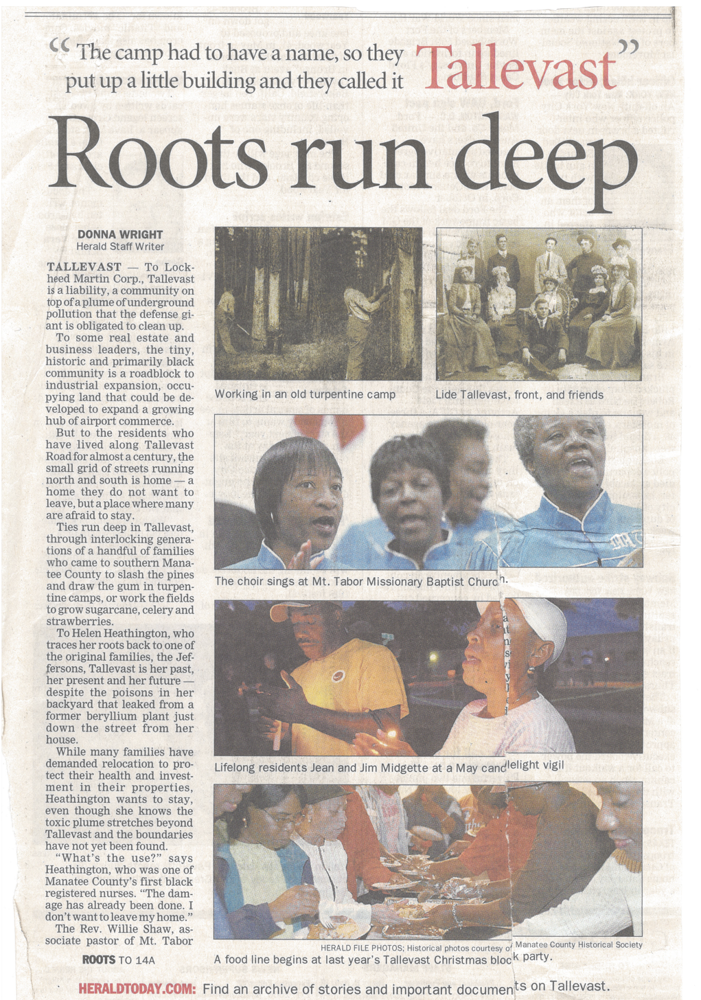
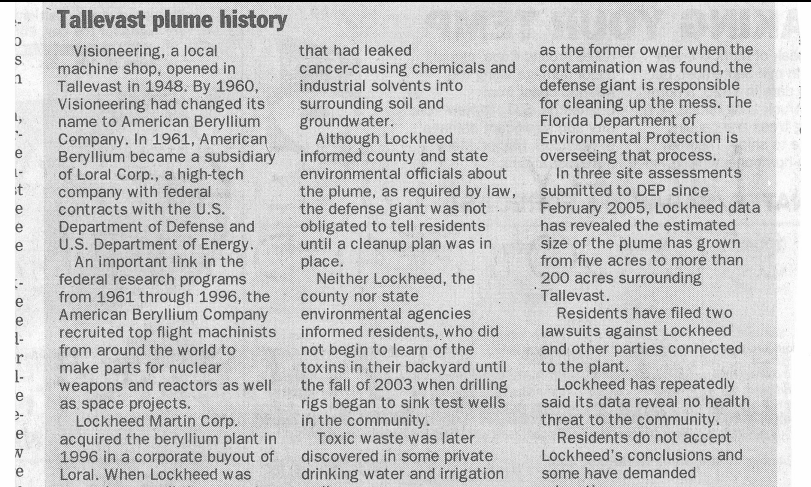
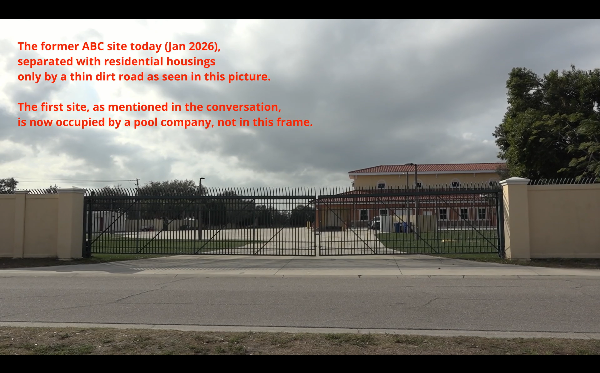
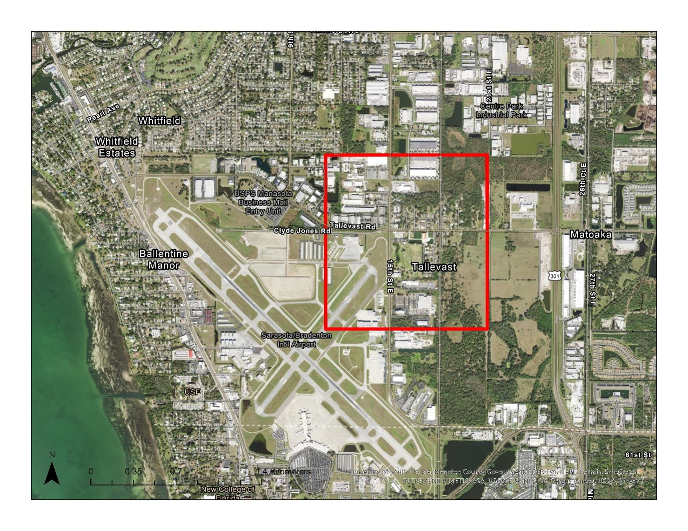
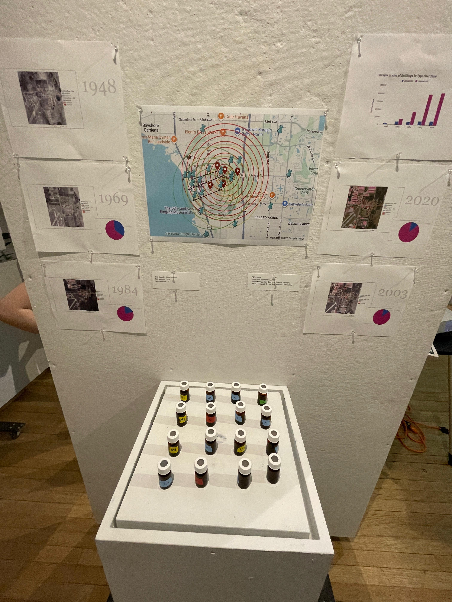

One Battle After Another: Living Beyond Disaster in Tallevast
Wilde Gallery · Williamstown · April 2026

Positioned at the center of the gallery, the photograph serves as the emotional core of the exhibition. The children's upward gaze gestures toward both vulnerability and endurance, reminding viewers that environmental injustice is ultimately lived through families, neighborhoods, and future generations.
The exhibition opens with testimonies from Tallevast residents, introducing visitors to a community shaped by faith, memory, environmental violence, and resistance.

Public Knowledge, Private Silence
Archival newspapers reveal how information about contamination circulated unevenly between government agencies, corporations, and residents.

Community Response
Residents organized, documented, and challenged official narratives surrounding the contamination.

One Battle After Another
Even after remediation efforts began, new struggles emerged over accountability, redevelopment, and community survival.

Geography of Exposure
The map visualizes the spatial relationship between homes, industrial facilities, and contaminated sites.

Material Evidence
Scientific samples provide a physical record of contamination, connecting invisible toxins to lived experiences within the community.